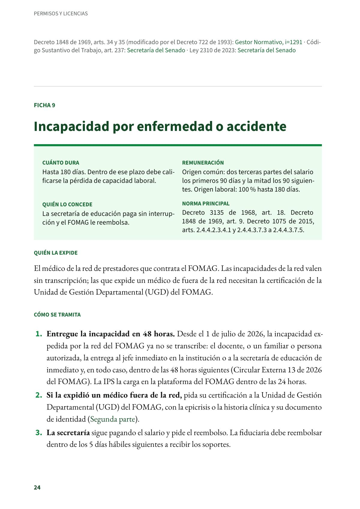
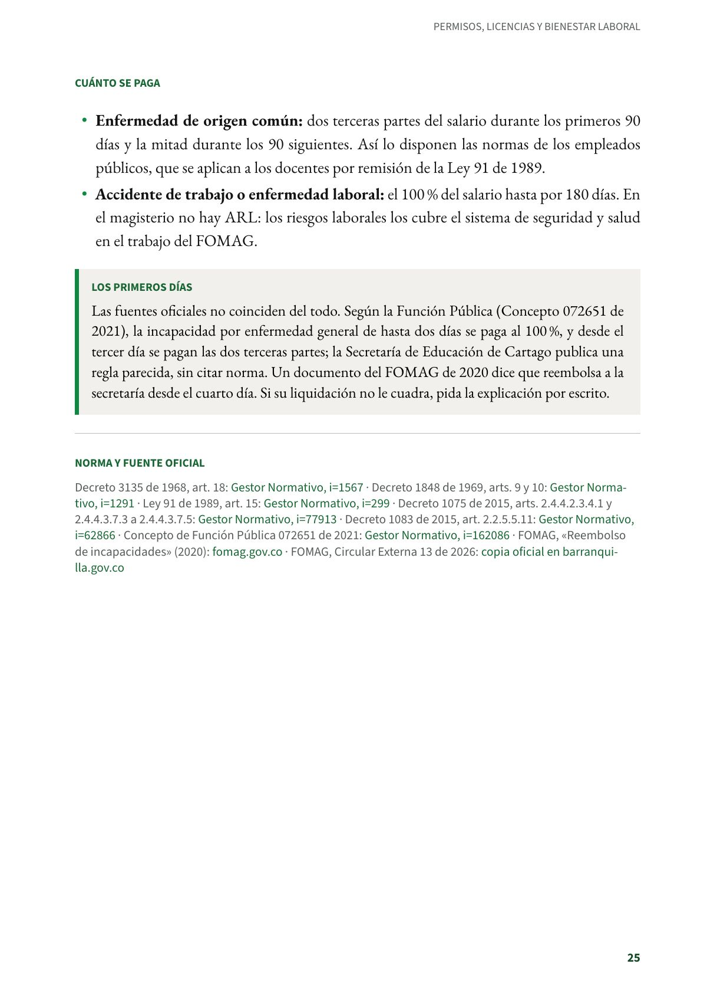

Incapacidad por enfermedad o accidente
Hasta 180 días. La incapacidad de la red del FOMAG se entrega en 48 horas, sin transcripción; la de origen común se paga en dos tercios y luego en la mitad.
PDF · 2 págs. · 49 KBEn resumen
- Cuánto dura: Hasta 180 días. Dentro de ese plazo debe calificarse la pérdida de capacidad laboral.
- Remuneración: Origen común: dos terceras partes del salario los primeros 90 días y la mitad los 90 siguientes. Origen laboral: 100 % hasta 180 días.
- Quién lo concede: La secretaría de educación paga sin interrupción y el FOMAG le reembolsa.
- Norma principal: Decreto 3135 de 1968, art. 18. Decreto 1848 de 1969, art. 9. Decreto 1075 de 2015, arts. 2.4.4.2.3.4.1 y 2.4.4.3.7.3 a 2.4.4.3.7.5.
Quién la expide
El médico de la red de prestadores que contrata el FOMAG. Las incapacidades de la red valen sin transcripción; las que expide un médico de fuera de la red necesitan la certificación de la Unidad de Gestión Departamental (UGD) del FOMAG.
Cómo se tramita
- Entregue la incapacidad en 48 horas. Desde el 1 de julio de 2026, la incapacidad expedida por la red del FOMAG ya no se transcribe: el docente, o un familiar o persona autorizada, la entrega al jefe inmediato en la institución o a la secretaría de educación de inmediato y, en todo caso, dentro de las 48 horas siguientes (Circular Externa 13 de 2026 del FOMAG). La IPS la carga en la plataforma del FOMAG dentro de las 24 horas.
- Si la expidió un médico fuera de la red, pida su certificación a la Unidad de Gestión Departamental (UGD) del FOMAG, con la epicrisis o la historia clínica y su documento de identidad (Segunda parte).
- La secretaría sigue pagando el salario y pide el reembolso. La fiduciaria debe reembolsar dentro de los 5 días hábiles siguientes a recibir los soportes.
Cuánto se paga
- Enfermedad de origen común: dos terceras partes del salario durante los primeros 90 días y la mitad durante los 90 siguientes. Así lo disponen las normas de los empleados públicos, que se aplican a los docentes por remisión de la Ley 91 de 1989.
- Accidente de trabajo o enfermedad laboral: el 100 % del salario hasta por 180 días. En el magisterio no hay ARL: los riesgos laborales los cubre el sistema de seguridad y salud en el trabajo del FOMAG.
Los primeros días
Las fuentes oficiales no coinciden del todo. Según la Función Pública (Concepto 072651 de 2021), la incapacidad por enfermedad general de hasta dos días se paga al 100 %, y desde el tercer día se pagan las dos terceras partes; la Secretaría de Educación de Cartago publica una regla parecida, sin citar norma. Un documento del FOMAG de 2020 dice que reembolsa a la secretaría desde el cuarto día. Si su liquidación no le cuadra, pida la explicación por escrito.
Norma y fuente oficial
Decreto 3135 de 1968, art. 18: Gestor Normativo · Decreto 1848 de 1969, arts. 9 y 10: Gestor Normativo · Ley 91 de 1989, art. 15: Gestor Normativo · Decreto 1075 de 2015, arts. 2.4.4.2.3.4.1 y 2.4.4.3.7.3 a 2.4.4.3.7.5: Gestor Normativo · Decreto 1083 de 2015, art. 2.2.5.5.11: Gestor Normativo · Concepto de Función Pública 072651 de 2021: Gestor Normativo · FOMAG, «Reembolso de incapacidades» (2020): fomag.gov.co · FOMAG, Circular Externa 13 de 2026: copia oficial en barranquilla.gov.co
Así se ve en el libro
2 páginas
